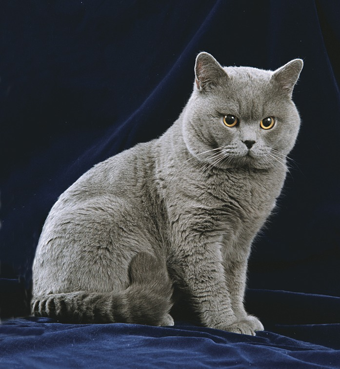

Наши любимцы
Мейн-кун

Мейн-ку́н (англ. maine coon) — порода кошек, которая произошла от кошек штата Мэн на северо-востоке США. Аборигенная порода кошек Северной Америки.
Крупнейшая порода кошек, самцы весят от 5,9 до 8,2 кг (кастрированные — до 12 кг), а самки от 3,6 до 5,4 кг (стерилизованные — до 7,5—8,5 кг). Высота в холке у взрослых кошек достигает от 25 до 41 см, а общая длина с хвостом до 120 см (длина хвоста до 36 см). Полный потенциальный размер кошки достигается в возрасте от 3 до 5 лет, в то время как у большинства других кошек — в возрасте 1 года. Однако есть и другие медленно взрослеющие породы, тоже крупного размера (например, норвежская лесная). Все особи породы мейн-кун имеют небольшие кисточки на кончиках ушей. Длина тела мейн-кунов составляет метр и более, самый длинный официально зарегистрированный мейн-кун имел тело длиной 1 метр 23 сантиметра.
Сфинкс
Канадский сфинкс — одна из нескольких бесшерстных пород кошек. При выведении породы была закреплена естественная рецессивная мутация, приводящая к отсутствию шерсти
В 1966 домашняя кошка родила голого котенка в Торонто, Канаде. Это, как выяснилось, было естественной мутацией и в результате появился сфинкс — такой, каким мы его теперь знаем. Этот кот и несколько других естественно лысых котов и кошек были обнаружены во всем мире. Они и составили фонд для развития этой необычной породы. В течение больше чем тридцати лет заводчики кошек в Европе и Северной Америке скрещивали сфинксов с другими неголыми кошками (обычно с девон-рексами), а затем снова с лысыми. Цель этой селекционной работы состояла в том, чтобы создать генетически сильную кошку с большим гибридным потенциалом. При правильном разведении сфинкс — очень крепкая порода с малым количеством серьезных заболеваний или генетических проблем.
Британская короткошёрстная
Британские короткошёрстные (рус. — британцы) — короткошёрстные кошки. Как правило, это сильные и крепкие кошки. Бывают от средних до крупных размеров. Согласно легенде, являются потомками Чеширского кота.
Шерсть у британской кошки очень пушистая и мягкая, хоть и довольно короткая. Британским кошкам свойственно много различных окрасов, существует около 30 оттенков цветов их густой, роскошной шерсти, самые популярные — сплошные (серо-голубой, голубой, чёрный, лиловый, шоколадный), табби и серебристые табби, их разновидности: пятно, полоса и мрамор.